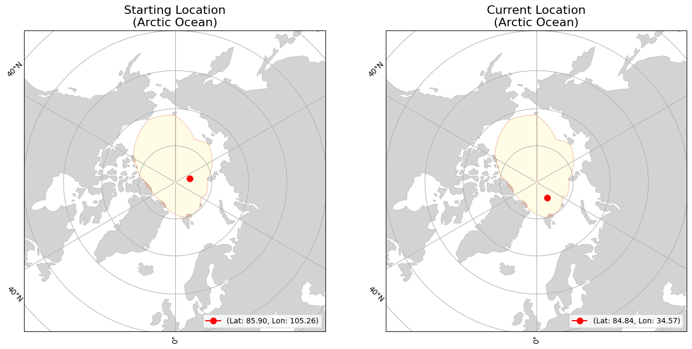
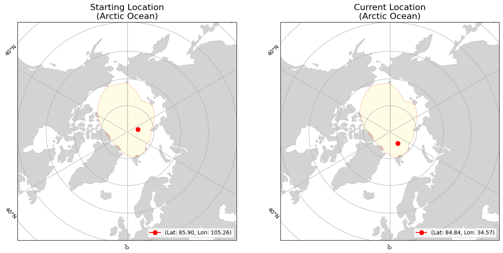

lon=105.25636
(Arctic Ocean)
lon=34.56802
(Arctic Ocean)
|
|
Buoy | Movement | Temperature | |||
|---|---|---|---|---|---|---|
| ID | 300434066254600 | Initial Position | lat=85.90082 lon=105.25636 (Arctic Ocean) |
Average Air Temperature | avg_air_temp | |
| Type | SIMB3 | Current Position | lat=84.84352 lon=34.56802 (Arctic Ocean) |
Minimum Air Temperature | min_air_temp | |
| Start Date | 01-01-2024 | Daily Distance Mean | 7.06 | Maximum Air Temperature | max_air_temp | |
| End Date | 07-29-2024 | Daily Distance Median | 6.408 | Average Sea Surface Temperature | avg_sst | |
| Status | floating | Daily Distance Standard Deviation | 4.061 | Minimum Sea Surface Temperature | min_sst | |
| Total Distance Start to End Dates | 1489.594 | Maximum Sea Surface Temperature | max_sst | |||
 
